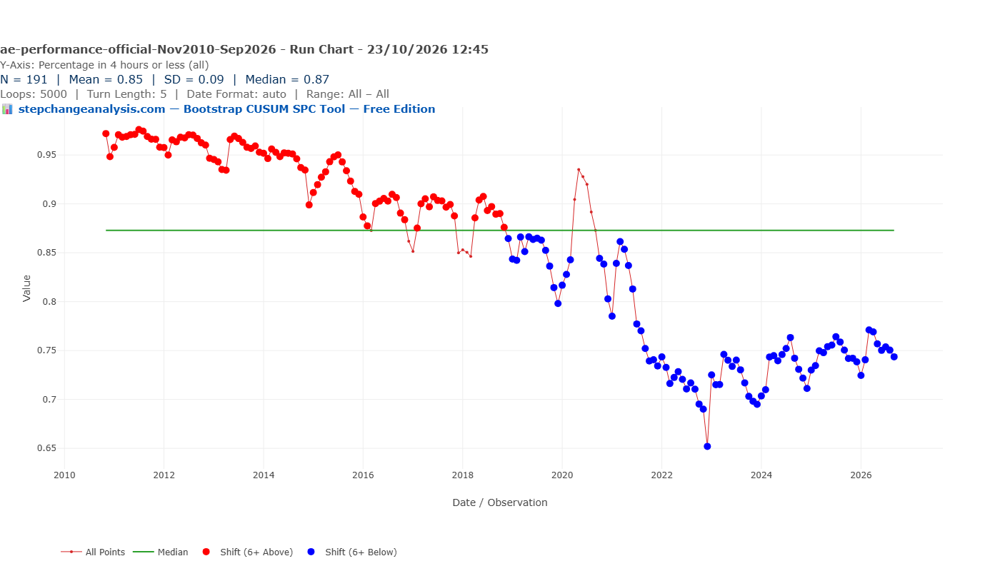
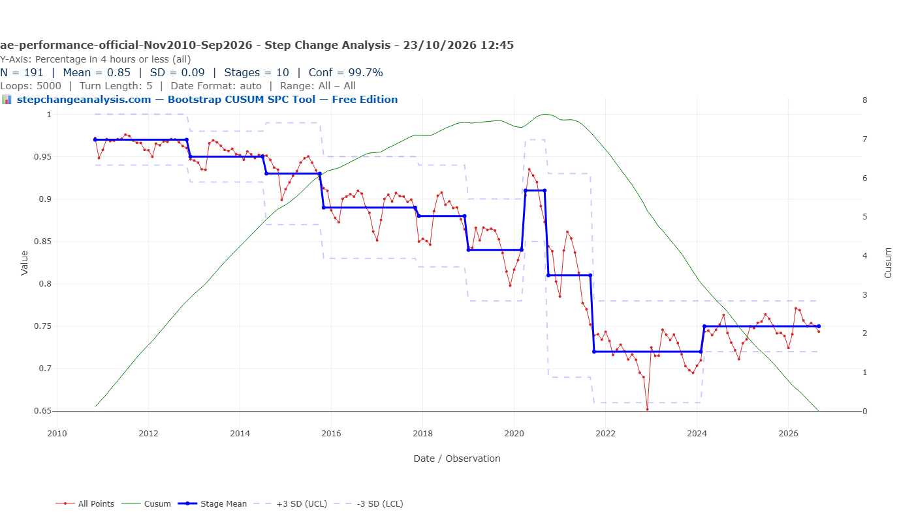

A&E performance was changing. What could we have learned sooner?
Recognise a change, investigate possible explanations and evaluate a response. A chart makes the pattern visible; it does not establish the cause.
Investigate changes while local records and people’s recollections are still available. Keep three jobs separate: recognising a pattern, explaining it and testing whether an intervention helped.
Start with what was measured
This example uses NHS England’s “Percentage in 4 hours or less (all)”: attendances admitted, transferred or discharged within four hours, not simply first seen. “All” includes all A&E types, not major emergency departments alone.
The source-extracted CSV contains 191 monthly observations from November 2010 to September 2026, with no missing observations filled in. Values are proportions: 0.88 means 88%. The chart-export date is not the final observation date.
Check comparability: figures before June 2015 were estimated from weekly returns. Fourteen trusts testing alternative metrics stopped reporting four-hour performance between May 2019 and May 2023. Attendance mix and coverage can affect the national percentage. Source and reporting qualifications.
Make the pattern visible
The run chart shows deterioration before COVID, an interruption around the pandemic and substantially lower performance later. Its green line is the whole-series median, not a target or a prospective baseline. Highlighted runs prompt investigation; they do not identify causes or exact change dates.
New to run charts? A run chart plots observations in time order; a median and defined run rules can help flag patterns. What is a run chart, and when should I use one?

During the first COVID wave, attendances fell while the four-hour percentage rose in April and May 2020. That recorded improvement does not establish better access or a successful intervention. Demand, patient mix and working arrangements changed together; delayed or avoided care also matters.
A retrospective median helps orient the reader, but can conceal recent changes. For local monitoring, choose an appropriate baseline and rules. Trend, seasonality and neighbouring months moving together still need attention.
Use fitted steps to focus questions—not declare causes
A fitted step estimates a possible change in average performance. It does not identify what changed in the system. Here, system change means changing how work operates—decisions, coordination, responsibilities or resources—not necessarily organisational restructuring.
The supplied export displays ten stages at a 99.7% setting. Implementation checks and suitability for this series remain under review. The chart explains the method and its limits; it does not endorse that stage count or those boundaries.
New to step-change charts? The fitted steps show possible changes in the average level of a measure—not their causes. How to read a step-change chart.

- Steps can approximate trends. A staircase need not represent separate abrupt events.
- Time-series assumptions matter. This bootstrap shuffles individual observations. That breaks time order and may give misleading confidence assessments where observations are dependent or seasonal.
- More loops do not fix unsuitable assumptions. Short stages and settings also need scrutiny.
- Confidence is not causal certainty. The displayed setting is not a 99.7% probability an intervention worked or a guarantee for every boundary.
The green CUSUM accumulates departures from the whole-series mean. Its slope can change without a peak or trough, and it returns approximately to zero by construction—not because performance recovered. The displayed ±3 SD bands are not confidence intervals for change dates.
Investigate the whole pathway
Check the data first, then examine what changed around the estimated date:
- Arriving: attendance volumes, patient needs and access to other services.
- Moving through hospital: staffing, beds, diagnostics, specialist decisions and coordination.
- Leaving safely: discharge decisions, community support and care availability.
These explanations may interact and vary by hospital. An event near a fitted boundary is a lead, not proof. Look for evidence that could contradict the preferred account.
NHS England’s Watford account describes treating corridor care as a whole-hospital problem, including leadership, discharge decisions and multidisciplinary working. It is a useful investigative example, not a controlled evaluation or an explanation of national deterioration. Explore the Watford case study, corridor-care Bright Spots and Bright Spot Analysis.
Plan local learning before implementation
A national average can conceal improvements and deterioration in different trusts. Use national charts for context, and meaningful local series to guide action without splitting into groups too small to interpret.
- Establish the starting pattern: definitions, existing trend and seasonality.
- Record the prediction: what should improve, why and over what timescale?
- Record implementation: dates and whether the new arrangements were used.
- Monitor benefit and harm: flow, safety and whether delay moves elsewhere.
- Investigate promptly and keep monitoring: assess explanations and persistence.
Start with an annotated run chart. Add change-point analysis only where its assumptions are suitable. Repeated retrospective testing as observations arrive does not automatically control false alarms. The action date, start of an effect and detection date differ; there is no universal delay.
How to take this further
- Right Problem — investigate what is producing the difficulty.
- Right Intervention — check that the change addresses the cause and was implemented.
- Right Measures — evaluate the intended outcome fairly and check harm elsewhere.
For the complete framework, read Why Improvement Programmes Fail.
Open the StepChange Analyzer → Use it to explore a question, not to substitute a chart signal for an explanation.
Sources and analysis notes
- NHS England: A&E Attendances and Emergency Admissions. Source series and reporting qualifications. This example uses 191 observations from November 2010–September 2026, extracted from the September 2026 workbook (published 8 October 2026), Performance sheet, date column B and value column K.
- Institute for Healthcare Improvement: Run Chart Tool. Practical use of observations over time.
- NHS England: Watford trust tackled corridor care as a whole-hospital problem. A reported improvement account, not a causal evaluation.
- Taylor: Change-Point Analysis—A Powerful New Tool for Detecting Changes. Method reference; citing it does not validate this implementation or application.
Reproducibility: both supplied exports are dated 23 October 2026 and display N = 191, Loops = 5000 and Turn Length = 5. The step-change export displays Conf = 99.7% and Stages = 10. These are recorded output settings, not an independent validation. A tool version or code hash was not supplied with the exports. Download the source-extracted CSV.
Correction to the earlier article: this version corrects a source-data alignment error: the earlier CSV paired performance values with dates three months too early. Activity starts in August 2010, while Performance starts in November 2010. The new charts use the Performance sheet’s own dates and current official values. This version also replaces definitive stage-count and causal claims with a qualified investigative example. Earlier wording about continuous CUSUM decline, universal detection delays and policy failure should not be relied upon.